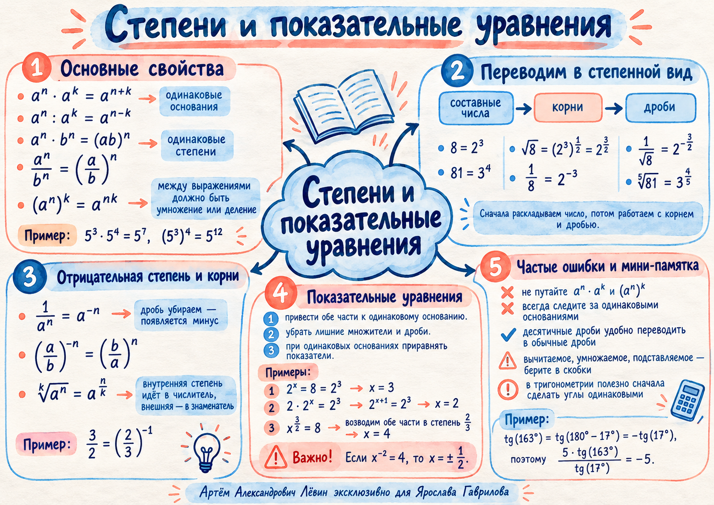

Занятие 18.10.2026 · чек-лист от 19.10.2026 · профильный ЕГЭ
Степени как язык преобразований
Привести числа, корни и дроби к степеням одного основания. Упростить показатели. Перейти от вычисления к уравнению и прикладной формуле.
В начале занятия повторили тригонометрические преобразования. Основной блок — свойства степеней и показательные уравнения.
Углы к одному значению
Ищите связь углов с 180°. Формулы приведения помогут сократить тригонометрическое выражение.
Тангенс во II четверти отрицателен.
Период тангенса — 180°.
Синус во II четверти положителен.
Синус в III четверти отрицателен.
Разобранный пример
163° = 180° − 17°, а tg 17° ≠ 0.
Двойной угол
Использовали sin 2α = 2 sin α cos α, затем формулы приведения.
Увидеть структуру
Одинаковое основание, одинаковый показатель и степень степени — три разных ситуации.
Умножаем одинаковые основания.
Делим одинаковые основания.
Объединяем основания при равных показателях.
Выносим общий показатель за дробь.
Показатели перемножаются.
Переходим к отрицательной степени.
Обращение дроби меняет знак показателя.
Внутренняя степень идёт в числитель.
Составные числа → корни → дроби
Переведите всё в общий степенной язык до сложных вычислений.
- Разложите составные числа.8 = 23 ··· 81 = 34 ··· 3125 = 55
- Замените корень дробным показателем.√8 = (23)1/2 = 23/2
- Переведите дроби в отрицательные степени.1√8 = 2−3/2 ··· 0,2 = 5−1
- Объедините подходящие основания и показатели. Выберите формулу, которая подходит именно к текущему действию.
- Проверьте знаки, скобки и допустимые значения. Помните: √(x²) = |x|.
Скобки сохраняют знаки
Трудности появляются прежде всего при отрицательных показателях и вычитании выражений.
Смешанные дробные показатели
1/3 + 1/4 − 1/12 = 1/2.
Вычитание отрицательного показателя
Знаменатель имеет основание 2; показатель вычитаем целиком.
Сначала общий базис
При a > 0 и a ≠ 1 равенство af(x) = ag(x) позволяет приравнять показатели.
Простейшее уравнение
Посторонний множитель приводим к степени
Сначала изолируем степень
Как убрать дробный показатель
Возводим обе части в степень, обратную 5/3.
Из формулы — к ответу
По условию P·v5/3 = C. Требуется найти v при P = 6,25 · 105, C = 200, v > 0.
- Изолируем неизвестную степень: v5/3 = C/P.
- Подставляем: 200 / 625000 = 1 / 3125 = 5−5.
- Возводим обе части в степень 3/5: v = (5−5)3/5 = 5−3.
После получения результата проверьте его подстановкой в исходную формулу. В прикладной задаче учитывайте предусмотренные условием ограничения и единицы измерения.
Путь А. Десять заданий
Задачи расположены по возрастанию сложности. Откройте ответ после собственного решения.
Нажмите на формулировку, чтобы раскрыть правильный ответ и ключевую подсказку. Разбор на бумаге остаётся основной частью работы.
01Вычислите 7 tg 152° / tg 28°.
02Вычислите 8 sin 70° cos 70° / sin 220°.
03Представьте 1 / ⁵√32 степенью с основанием 2.
04Упростите 811/4 · 31/2.
05Вычислите 160,375 · 20,5.
06Вычислите ((31/2 · 31/3) / ⁶√3)3.
07Вычислите (0,25)√5−2 / 2−2√5.
08Решите 27 · 3(x−2)/3 = 9.
09Решите x3/2 = 64 на действительных числах.
10Если P·v3/2 = C, P = 2,5 · 103, C = 20 и v > 0, найдите v.
Ответы не влияют на оценку компетенций в кабинете.
Вернуться к конспекту
Пособие и краткая акварельная памятка сохраняют основные идеи занятия.

